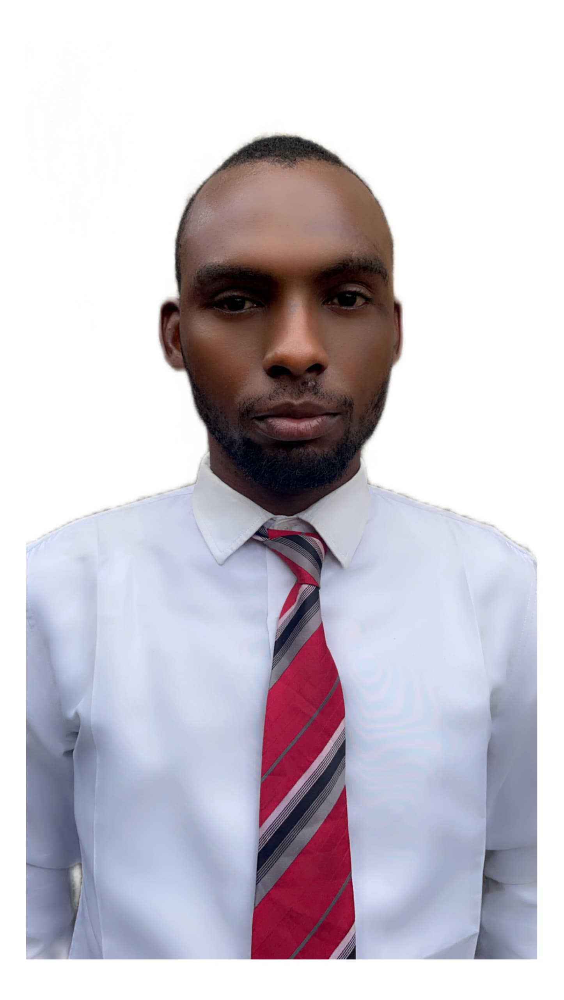

Samson Samuel | WDD 130
Hello! My name is Samson Samuel and I am from Rivers, Nigeria. I enjoy reading, i am currently not working and i hope to get a job while studying software development, it is so nice studying with BYU.
Hello! My name is Samson Samuel and I am from Rivers, Nigeria. I enjoy reading, i am currently not working and i hope to get a job while studying software development, it is so nice studying with BYU.